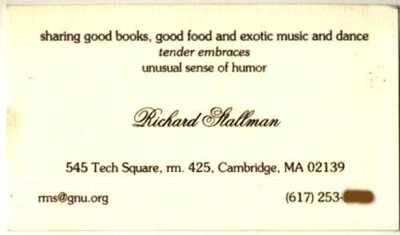

Scrivere la biografia di qualcuno ancora vivo è un po’ come curare la produzione di uno spettacolo teatrale. Il dramma rappresentato sul palco impallidisce di fronte a quello in atto dietro le quinte.
Nel libro The Autobiography of Malcolm X, Alex Haley offre ai lettori un colpo d’occhio al dramma che si svolge dietro le quinte. Abbandonando il ruolo di ghostwriter, Haley decide di narrare l’epilogo finale in prima persona. Un epilogo in cui illustra il percorso di un giornalista freelance, inizialmente definito “strumento” e “spia” dal portavoce della Nation of Islam, che riesce poi a superare una serie di ostacoli personali e politici pur di mettere su carta il racconto della vita di Malcolm X.
Pur esitando a paragonare il mio libro a quello di Haley, ho un debito di gratitudine con lui per quello schietto epilogo. Nel corso degli ultimi 12 mesi mi è servito come una sorta di manuale d’uso per il trattamento di un soggetto biografico che ha costruito l’intera carriera sul continuo dissenso con chiunque altro. Fin dall’inizio avevo previsto di chiudere questo lavoro con un epilogo analogo, sia in omaggio a Haley sia per informare i lettori sull’evoluzione stessa del libro.
La storia dietro questa storia inizia in appartamento di Oakland, California, per dipanarsi successivamente nelle varie località menzionate nel libro – Silicon Valley, Maui, Boston e Cambridge. Ma in definitiva il racconto ruota intorno a due città: New York, capitale mondiale dell’editoria, e Sebastopol, California, capitale editoriale di Sonoma County.
Una storia che prende avvio nell’aprile 2000, epoca in cui collaboravo con il defunto sito Web BeOpen (http://www.beopen.com/). Uno dei miei primi lavori fu un’intervista telefonica con Richard M. Stallman. Il pezzo venne fuori abbastanza bene, al punto che Slashdot (http://www.slashdot.org/), il noto sito di “news for nerds” di proprietà della VA Software, Inc. (già VA Linux Systems e ancor prima VA Research), vi inserì un link nell’elenco dei riferimenti quotidiani. Dopo poche ore, i server web di BeOpen presero a surriscaldarsi per i numerosi utenti che volevano leggere l’intervista.
Considerando gli scopi e gli obiettivi iniziali, la storia avrebbe dovuto chiudersi qui. Invece tre mesi dopo quell’intervista, mentre seguivo la O’Reilly Open Source Conference di Monterey, California, ricevetti la seguente e-mail da Tracy Pattison, responsabile dei diritti esteri presso un grande editore di New York:
To: sam@BeOpen.com
Subject: RMS Interview
Date: Mon, 10 Jul 2000 15:56:37 -0400
Ho letto con molto interesse la tua intervista con Richard Stallman su BeOpen. Seguo da tempo RMS e le sue attività, e direi che il tuo pezzo è veramente riuscito a catturare buona parte dello spirito di quanto Stallman sta facendo con GNU-Linux e la Free Software Foundation.
Mi piacerebbe tuttavia saperne di più – e non credo di essere la sola a volerlo. Credi sia possibile reperire ulteriori fonti e/o informazioni per espandere e aggiornare l’intervista e adattarla in una sorta di profilo di Stallman? Grazie forse a notizie più aneddotiche sulla sua personalità e sul suo passato che possano interessare e illuminare quei lettori al di fuori della ristretta cerchia dei programmatori?
Il messaggio suggeriva di telefonarle in modo da elaborare ulteriormente quell’idea. Fu esattamente quello che feci. Tracy mi riferì che il suo editore stava per lanciare una collana di libri elettronici, ed era alla ricerca di titoli in grado di attirare la prima ondata di utenti. Il formato dell’e-book non superava le 30.000 parole, circa 100 pagine, e lei stessa aveva suggerito di aprire con una delle figure più importanti della comunità hacker. L’idea era piaciuta e nella fase di ricerca si era imbattuta nell’intervista a Stallman su BeOpen. Aveva così deciso di inviarmi quella e-mail.
Ecco cosa mi chiedeva Tracy: sarei stato disposto ad ampliare l’intervista per arrivare ad un vero e proprio profilo di quella lunghezza?
La mia replica fu immediata: ci sto. Prima dell’accettazione definitiva, Tracy suggerì di mettere insieme una proposta formale da presentare ai suoi dirigenti. Due giorni dopo le inviai un progetto dettagliato. Trascorsa una settimana, Tracy replicò via e-mail di aver ottenuto semaforo verde.
Devo ammettere che ebbi un ripensamento sul fatto di poter coinvolgere Stallman in un progetto di libro elettronico. Da giornalista attento al mondo open source, ero ben consapevole della sua enorme pignoleria. A quel punto avevo già raccolto una mezza dozzina di e-mail in cui venivo sgridato per aver usato “Linux” anziché “GNU/Linux”.
Eppure sapevo anche che Stallman era alla ricerca di nuove opportunità per far giungere il proprio messaggio a un pubblico più vasto. Forse se gli avessi presentato il progetto sotto questo punto di vista, si sarebbe mostrato maggiormente ricettivo. In caso negativo, avrei sempre potuto fare affidamento sulla notevole mole di documenti, interviste e resoconti online di conversazioni diffuse in giro da Stallman così da mettere insieme una biografia non autorizzata.
Durante la ricerca, scovai un saggio dal titolo “Freedom Or Copyright?” (Libertà o copyright?), scritto da Stallman e apparso sul numero di giugno 2000 della MIT Technology Review, dove si bacchettavano gli e-book per una serie di peccati commessi nel software. Non soltanto i lettori erano costretti a ricorrere a programmi proprietari per leggerli, lamentava Stallman, ma i metodi utilizzati a prevenzione di copie non autorizzate apparivano eccessivamente pesanti. Anzichè fare il download di un comune file HTML o PDF, gli utenti prelevavano un file cifrato. Essenzialmente l’acquisto di un e-book significava comprare una chiave non trasferibile tramite la quale poter decifrare il contenuto protetto da crittografia. Ogni tentativo di aprire tale contenuto in assenza dell’apposita chiave costituiva un reato penale sulla base del Digital Millennium Copyright Act, la legge del 1998 mirata a imporre la stretta tutela del copyright su Internet. Analogo lo scenario per quei lettori che avessero convertito il contenuto di un libro elettronico in un file di formato comune, pur se con l’unica intenzione di leggerlo altrove su un computer diverso. Al contrario di un normale volume cartaceo, ai lettori veniva negato il diritto a prestare, copiare o rivendere l’e-book. Veniva loro riconosciuto soltanto il diritto a leggerlo su una specifica macchina autorizzata, nella spiegazione di Stallman:
Con i libri cartacei ci vengono tuttora riconosciute le libertà di una volta. Ma se questi dovessero essere sostituiti dagli e-book, ciò servirebbe a ben poco. Con il cosiddetto “inchiostro elettronico”, grazie al quale è possibile effettuare il download di nuovo testo in un foglio apparentemente stampato, perfino i giornali rischiano di divenire effimeri. Facile immaginarne le conseguenze: non più librerie dell’usato; impossibile prestare un libro a un amico o prenderne uno in prestito dalla biblioteca pubblica; nessuna possibilità che qualcuno possa leggere senza pagare. (E a giudicare dalle pubblicità di Microsoft Reader, basta perfino con l’acquisto anonimo di libri). Questo lo scenario che gli editori starebbero preparandoci1.
Inutile aggiungere come il saggio suscitasse più di qualche preoccupazione. Né Tracy né io avevamo discusso il software a cui la casa editrice sarebbe ricorsa per l’e-book, e neppure si era parlato del tipo di copyright che ne avrebbe tutelato l’utilizzo. Le menzionai l’articolo su Technology Review, chiedendole di fornirmi ragguagli sulle procedure aziendali al riguardo. Tracy promise che mi avrebbe fatto sapere.
Impaziente di darmi da fare, decisi di chiamare comunque Stallman per informarlo del progetto. Quando lo feci, egli espresse un immediato interesse e un’altrettanto immediata preoccupazione. “Hai letto il mio saggio sugli e-book?” mi chiese. Gli risposi affermativamente, aggiungendo di essere in attesa della replica dell’editore. A quel punto egli pose due condizioni: non avrebbe appoggiato un meccanismo di licenza dell’e-book cui fondamentalmente si opponeva, e non voleva apparire come qualcuno che potesse offrire un simile sostegno. “Non voglio partecipare in alcunché possa farmi apparire un ipocrita”, spiegò.
Per Stallman, la questione del software era secondaria rispetto a quella del copyright. Mi disse che non si sarebbe curato della scelta del software imposta dall’editore o dai rivenditori coinvolti, purché nella dicitura del copyright venisse specificatamente consentita agli utenti la libertà di fare e distribuire copie letterali del contenuto originale. Stallman segnalò come possibile modello The Plant di Stephen King. Nel giugno 2000 quest’ultimo annunciò sul proprio sito Web l’intenzione di auto-pubblicare il libro a puntate. Secondo quanto riportato nell’annuncio, il costo totale del libro finale sarebbe stato 13 dollari, diviso in rate da un dollaro ciascuna. Fintanto che il 75% dei lettori avesse pagato per ogni capitolo, King promise che avrebbe continuato a distribuire i successivi. Ad agosto il progetto parve funzionare, con due capitoli pubblicati e un terzo in arrivo.
“Potrei accettare qualcosa di analogo”, concluse Stallman. “Purché venga permessa la copia letterale”.
Inoltrai quanto sopra a Tracy. Fiducioso che saremmo riusciti a raggiungere un accordo equo per tutti, richiamai poi Stallman così da stabilire la prima intervista per il libro. Si disse d’accordo senza pormi ulteriori domande sullo stato delle cose. Poco tempo dopo la prima intervista, mi sbrigai a fissare la successiva (quella di Kihei), cercando di incastrarla prima che Stallman andasse in vacanza a Tahiti per due settimane.
Fu durante questa sua vacanza che ricevetti la brutta notizia da Tracy. Il dipartimento legale dell’azienda non voleva modificare alcun copyright sull’e-book. I lettori che avessero desiderato trasferirne i contenuti, sarebbero così stati costretti a superare il codice di cifratura oppure a convertirne il contenuto in un formato aperto tipo HTML. In un caso o nell’altro, ciò avrebbe significato infrangere la legge e andare incontro a conseguenze penali.
Con due interviste fresche già nel cassetto, non vedevo altro modo per scrivere il libro se non quello di raccogliere nuovo materiale. Organizzai rapidamente un viaggio a New York per incontrare il mio agente e Tracy così da studiare un’eventuale soluzione di compromesso.
Una volta a New York, vidi prima il mio agente, Henning Guttman. Era il nostro primo incontro faccia a faccia, e si dimostrò pessimista sulla possibilità di forzare qualche compromesso, almeno rispetto alla posizione dell’editore. Le case editrici grandi e famose guardavano già con sospetto al formato del libro elettronico e non parevano propense a sperimentare una formulazione del copyright che facilitasse agli utenti la possibilità di non pagare. In quanto agente specializzato in editoria tecnica, tuttavia, Henning si mostrò interessato all’aspetto romanzesco della situazione. Lo informai sulle due interviste già raccolte e sulla promessa di non pubblicare il libro in alcuna maniera che avesse potuto far apparire Stallman “come un’ipocrita”. Concordando sul fatto che fossi vincolato da un accordo morale, suggerì di far leva su un simile vincolo.
A parte ciò, aggiunse Henning, avremmo sempre potuto ricorrere alla strategia del bastone e della carota. Quest’ultima riguardava la pubblicità derivante dall’uscita di un e-book rispettoso dei principi etici interni alla comunità hacker. Il bastone era costituito dai rischi insiti nella pubblicazione di un libro elettronico che invece andasse contro tali principi. Nove mesi prima che Dmitri Skylarov divenisse un caso celebre su Internet, eravamo consapevoli che sarebbe stata soltanto questione di tempo prima che qualche abile programmatore rivelasse come infrangere i sistemi di protezione degli e-book. Sapevamo altresì come la pubblicazione presso un grande editore di un libro elettronico protetto da crittografia su Richard M. Stallman equivalesse a mettere in copertina una frase tipo: “ruba questo e-book”.
Dopo l’incontro con Henning, decisi di richiamare Stallman. Nella speranza di rendere la carota più allettante, discutemmo alcuni possibili compromessi. Perché non proporre all’editore di pubblicare il libro sotto una doppia licenza, qualcosa di simile a quanto aveva fatto la Sun Microsystems con Open Office, il pacchetto desktop di software libero? La versione commerciale dell’e-book avrebbe potuto essere pubblicata in un formato normale, approfittando delle opzioni aggiuntive offerte dall’apposito software, e al contempo sarebbe stata diffusa la versione copiabile nel formato HTML, esteticamente meno appetibile.
Stallman replicò di non aver problemi con la doppia licenza, ma era contrario all’idea di rendere la versione liberamente copiabile inferiore rispetto a quella a pagamento. Inoltre, aggiunse, l’idea era fin troppo complicata. La doppia licenza funzionò nel caso di Open Office soltanto perché non era possibile esercitare alcun controllo sulla decisione presa. In questa circostanza, aggiunse, poteva invece influenzare il risultato finale. Poteva rifiutarsi di collaborare.
Avanzai qualche altra proposta senza ottenere grande effetto. L’unica concessione che riuscii a strappare a Stallman fu che il copyright dell’e-book potesse limitare ogni forma di condivisione alla “redistribuzione non-commerciale”.
Prima di chiudere la conversazione, mi suggerì di informare l’editore sulla mia promessa di garantire la libera circolazione dell’opera. Gli risposi che, pur non potendomi dichiarare totalmente d’accordo su questa posizione, non vedevo come avrei mai potuto finire il libro senza la sua personale cooperazione. Apparentemente soddisfatto, Stallman chiuse la telefonata con il solito saluto: “Happy hacking”.
Il giorno seguente io e Henning c’incontrammo con Tracy, che c’informò della disponibilità da parte dell’editore a pubblicare porzioni dell’e-book liberamente copiabili in formato non cifrato, senza però superare le 500 parole. Henning le spiegò che ciò non mi avrebbe consentito di tener fede all’impegno morale preso con Stallman. Tracy ribatté facendo presente gli obblighi contrattuali assunti dall’azienda con distributori quali Amazon.com. Anche nel caso della libera disponibilità del testo soltanto per questa volta, esisteva il rischio che gli altri partner l’avrebbero considerato una rottura degli impegni contrattuali. Escludendo qualsiasi cambiamento di opinione da parte dell’editore o di Stallman, la decisione finale pesava esclusivamente sulle mie spalle. Avrei potuto usare le interviste già realizzate e ribaltare il mio precedente accordo con Stallman, oppure avrei potuto rifarmi all’etica giornalistica per ribadire l’accordo verbale sulla pubblicazione del libro.
Dopo la riunione, io e il mio agente andammo a sederci in un bar sulla Third Avenue. In quei giorni usavo il suo telefono cellulare per chiamare Stallman, lasciando un messaggio quando non rispondeva. Henning si assentò un momento, così da lasciarmi il tempo di raccogliere le idee. Quando tornò, teneva in mano il cellulare.
“È Stallman”, annunciò.
La conversazione partì subito col piede sbagliato. Gli riferii i commenti di Tracy sugli obblighi contrattuali dell’editore.
“E allora?”, fece Stallman bruscamente. “Perché mai dovrei fregarmene dei loro impegni contrattuali?”
Perché è troppo chiedere a una grande casa editrice di rischiare una battaglia legale con i distributori per un libro elettronico di 30.000 parole, azzardai.
“Ma non te ne rendi conto?”, replicò Stallman. “È proprio questo il punto. Io voglio un segnale di vittoria. Voglio costringerli a decidere tra la libertà e i soliti affari commerciali.”
Con la frase “un segnale di vittoria” che mi echeggiava nella testa, spostai temporaneamente l’attenzione verso i passanti fuori dal bar. Entrando nel locale, avevo notato con piacere che si trovava a due passi dall’angolo immortalato nel pezzo del 1976 dei Ramones “53rd and 3rd”, canzone che mi era sempre piaciuto rifare nel mio passato da musicista. Come il vagabondo in perenne frustrazione protagonista di quel pezzo, mi sentii crollare addosso in un attimo tutto quello che avevo costruito fino a quel momento. L’ironia era palpabile. Dopo aver trascorso settimane a registrare con piacere le lamentele altrui, eccomi nella posizione di dover tentare la più difficile delle manovre: strappare un compromesso a Richard Stallman.
Fu mentre continuavo a blaterare sulla posizione dell’editore, rivelando così la crescente simpatia nei suoi confronti, che Stallman, come un animale alla vista del sangue, partì all’attacco.
“Così stanno le cose, dunque? Vuoi abbandonarmi? Sei proprio deciso a piegarti ai loro voleri?”
Sollevai nuovamente la questione del doppio copyright.
“Intendi dire, doppie licenze”, tagliò corto Stallman.
“Si, licenze, copyright, quella roba lì”, risposi, sentendomi improvvisamente come un tonno preso all’amo che lascia una scia di sangue nel mare dietro di sè.
“Ah, ma perché diavolo non hai fatto come ti avevo suggerito?”, urlò.
Devo aver sostenuto la posizione dell’editore fino alla fine, perché nei miei appunti sono riuscito a prendere nota della bordata finale di Stallman: “Non m’importa nulla. Quel che stanno cercando di fare è sbagliato. Addio.”
Appena messo giù il telefono, ecco il mio agente farmi scivolare davanti un boccale di Guinness alla spina. “Ho pensato che ne avresti avuto bisogno”, fece ridendo. “Verso la fine della telefonata, mi sono accorto che stavi tremando.”
Proprio così. E avrei smesso di tremare soltanto dopo aver scolato più di mezzo boccale di birra. Era strano sentirsi definire un emissario del “male”. Ancor più perché appena tre mesi prima me ne stavo nel mio appartamento di Oakland cercando ispirazione per il prossimo articolo. Adesso invece ero seduto in una parte del mondo conosciuta soltanto attraverso dei pezzi rock, tenendo riunioni con direttori editoriali e bevendo birra davanti a un agente letterario che non avevo mai visto in faccia fino al giorno prima. Pareva tutto così irreale, come guardare la mia vita scorrere all’indietro nel montaggio di un film.
Fu in quel momento che si fece avanti il mio senso dell’assurdo. Il tremore iniziale diede luogo a risate convulse. Agli occhi del mio agente devo essere parso uno dei tanti fragili scrittori colpito da un improvviso collasso emotivo. Mi sembrava invece di iniziare ad apprezzare la cinica bellezza di quella situazione. Che l’affare fosse andato in porto o meno, avevo già per le mani una buon articolo. Si trattava soltanto di trovare il posto giusto dove farlo uscire. Quando finalmente riuscii a fermare quelle convulsioni, alzai il bicchiere per proporre un brindisi.
“Benvenuto alla linea del fronte, amico mio”, dissi brindando con il mio agente. “Meglio non prendersela troppo”.
Se stessimo davvero seguendo la trama di uno spettacolo teatrale, a questo punto sarebbe stato appropriato un interludio romantico. Affranta dall’intensità del precedente incontro, Tracy ci aveva invitato ad andare a bere qualcosa insieme ai colleghi. Lasciammo perciò il bar sulla Third Avenue, scendendo giù verso l’East Village per unirci a lei e ai suoi amici.
Una volta lì, io e Tracy cominciammo a conversare avendo però cura di evitare ogni questione professionale. Una conversazione piacevole, rilassata. Prima di lasciarci, rimanemmo d’accordo che ci saremmo visti nuovamente l’indomani sera. Ancora una volta la conversazione fu piacevole, a tal punto che l’e-book di Stallman divenne quasi un lontano ricordo.
Tornato a Oakland, chiamai vari amici e conoscenti giornalisti. Raccontai loro le mie vicissitudini. Per lo più venni rimproverato per aver lasciato troppo spazio a Stallman nelle trattative precedenti le interviste. Un ex professore di scuola media mi suggerì di ignorare gli “ipocriti” commenti di Stallman e procedere tranquillamente con la stesura del libro. Alcuni reporter a conoscenza della sua sagacia nei confronti dei media, espressero solidarietà ma offrirono una risposta unanime: la decisione finale pesa unicamente sulle tue spalle.
Decisi allora di mettere a riposo il progetto. Anche con quelle interviste, non è che stessi facendo grandi progressi. In tal modo potevo inoltre continuare a vedere Tracy senza dover prima discutere con Henning. Entro Natale ci eravamo scambiati reciprocamente la visita: lei era volata in California, io ero andato una seconda volta a New York. Il giorno prima di fine anno, le chiesi di sposarmi. Dovendo scegliere su quale costa vivere, optai per New York. A febbraio impacchettai il portatile e tutto il materiale relativo alla biografia di Stallman, e traslocai definitivamente sulla East Coast. Io e Tracy ci sposammo l’11 maggio. Decisamente un bel risultato per un contratto editoriale fallito.
Durante l’estate, iniziai a contemplare la possibilità di trasformare le interviste in articoli per qualche rivista. Eticamente mi sembrava una posizione corretta, poiché nell’accordo originale non si era stabilito nulla riguardo le comuni pubblicazioni cartacee. A essere onesti, mi sentivo maggiormente a mio agio provando a scrivere qualcosa su Stallman trascorsi otto mesi di silenzio radio. Dopo quella telefonata a settembre, mi aveva inviato soltanto due e-mail. In entrambe venivo redarguito per aver usato “Linux” anziché “GNU/Linux” in un paio di articoli per la rivista web Upside Today. A parte ciò, avevo apprezzato quel silenzio. A giugno, una settimana dopo il suo intervento alla New York University, decisi di rompere il ghiaccio buttando giù un articolo di 5.000 parole su Stallman. Stavolta le parole fluivano bene. La distanza aveva contribuito a farmi riguadagnare una prospettiva emotiva.
A luglio, un anno esatto dopo la prima e-mail di Tracy, ricevetti una telefonata da Henning. Mi diceva dell’interesse di O’Reilly & Associates, casa editrice di Sebastopol, California, alla pubblicazione della biografia di Stallman. La notizia non mancò di farmi piacere. Fra tutti gli editori al mondo, O’Reilly, lo stesso per cui era uscito The Cathedral and the Bazaar di Eric Raymond, sembrava il più sensibile alle questioni che avevano di fatto stroncato il precedente e-book. Come giornalista, avevo utilizzato pesantemente i riferimenti storici contenuti nel volume Open Sources, anch’esso apparso per i tipi di O’Reilly2. Sapevo inoltre che parecchi capitoli di quest’ultimo, compreso quello curato da Stallman, erano accompagnati da un copyright che ne consentiva la redistribuzione. Informazione utile nel caso in cui il formato elettronico fosse saltato nuovamente fuori.
Come infatti accadde puntualmente. Tramite Henning venni a sapere dell’intenzione di O’Reilly di pubblicare la biografia sia come libro cartaceo sia all’interno del servizio a pagamento per abbonati denominato Safari Tech Books Online. La licenza stabilita in tal caso avrebbe previsto alcune limitazioni particolari3, mi avvisò Henning, ma O’Reilly si dichiarò d’accordo alla stesura di un copyright che consentisse agli utenti di copiare e distribuire il testo del libro a prescindere dal formato. Praticamente, in quanto autore, mi veniva offerta la possibilità di scegliere tra due tipi di licenza: la Open Publication License oppure la GNU Free Documentation License.
Verificai contenuti e antefatti relativi a ciascuna possibilità. La Open Publication License (OPL)4 riconosce ai lettori il diritto alla riproduzione e alla distribuzione dell’opera, per intero o in parte, tramite ogni supporto “fisico o elettronico”, purché l’opera copiata mantenga l’identica Open Publication License. Vengono altresì consentite alcune modifiche sulla base di particolari condizioni. Sono infine incluse una serie di opzioni che, se così specificate dall’autore, possono limitare la creazione di versioni “modificate in maniera sostanziale” o di derivati sotto forma di libro privi di approvazione preventiva da parte dello stesso autore.
Invece la GNU Free Documentation License (GFDL)5 consente la copia e distribuzione di un documento tramite ogni supporto, purché l’opera risultante segua la medesima licenza. Permette inoltre di apportare modifiche rispettando determinate condizioni. Al contrario della OPL, tuttavia, non offre agli autori l’opzione di limitare ulteriormente specifici cambiamenti. Neppure consente agli stessi autori di respingere quelle modifiche che possano risultare in un prodotto editoriale in diretta concorrenza. Richiede però l’inclusione di informazioni specifiche in copertina e sul retro-copertina nel caso in cui qualcuno, al di fuori del detentore del copyright, volesse pubblicare oltre 100 copie di un’opera così tutelata.
Nel lavoro di ricerca sulle licenze, mi assicurai di studiare l’apposita pagina presente nel sito del progetto GNU, sotto il titolo “Various Licenses and Comments About Them” (Licenze varie e relativi commenti)6. Fu qui che trovai un’analisi della Open Publication License firmata da Stallman. La critica verteva sulla creazione di opere modificate e sulla possibilità riservata all’autore di scegliere una qualsiasi delle opzioni della OPL onde limitare le modifiche consentite. Nel caso in cui però l’autore non fosse intenzionato a selezionare alcuna opzione, faceva notare Stallman, meglio sarebbe stato ricorrere alla GFDL, la quale minimizzava il rischio della successiva apparizione di quelle opzioni non selezionate nelle versioni modificate di un documento.
In entrambe le licenze l’importanza delle modifiche ne rifletteva l’obiettivo originario – ovvero, consentire ai possessori di manuali software la possibilità di migliorarne il testo tenendone comunque informato il resto della comunità. Dato che in questo caso non si trattava di un manuale, le clausole sulle modifiche delle due licenze mi riguardavano ben poco. La mia unica preoccupazione stava nel garantire agli utenti la libertà di scambiare copie del libro o copiarne il contenuto, assicurando una libertà identica a quella acquisita grazie all’acquisto del volume cartaceo. Considerando valide entrambe le licenze in tal senso, decisi di firmare il contratto con O’Reilly.
Eppure ero attratto dall’idea di consentire modifiche senz’alcuna restrizione. Nella fase iniziale delle trattative con Tracy, avevo menzionato i meriti di una licenza tipo GPL per il contenuto dell’e-book. Nel caso peggiore, mi dicevo, quella licenza avrebbe garantito una buona pubblicità positiva. Nel caso migliore, avrebbe incoraggiato i lettori a partecipare al processo di scrittura del libro. Come autore avrei consentito agli altri l’emendamento del testo purché il mio nome fosse comparso sempre davanti a quelli altrui. Inoltre, sarebbe stato interessante osservare l’evoluzione del progetto. Immaginavo le edizioni successive simili a versioni online del Talmud, con il mio testo originale in una colonna centrale circondato dai perspicaci commenti altrui ai margini.
Sostanzialmente l’idea traeva ispirazione dal progetto Xanadu (http://www.xanadu.com/), la leggendaria idea di software inizialmente concepita da Ted Nelson nel 1960. Durante la O’Reilly Open Source Conference del 1999, avevo seguito la prima dimostrazione del derivato open source di quel progetto, Udanax, rimanendo assai colpito dai risultati ottenuti. Nella visualizzazione di una sequenza, Udanax presentava l’opera originale e quella derivata tramite il semplice formato testuale affiancato su due colonne. Grazie a un semplice clic, il programma visualizzava delle linee che collegavano ogni frase del testo originario con l’analogo concettuale dello scritto derivato. Non sembrava certo necessario ricorrere a Udanax per una biografia in formato e-book di Richard M. Stallman, ma vista l’esistenza di simili capacità tecnologiche, perché non offrire agli utenti la possibilità di darsi da fare?7
Quando Laurie Petrycki, redattore incaricato del progetto presso O’Reilly, mi propose la scelta tra la OPL e la GFDL, venni nuovamente cullato da quella fantasia. A settembre 2001, in occasione della firma del contratto, i libri elettronici erano divenuti pressoché lettera morta. Numerose case editrici, inclusa quella in cui lavorava Tracy, stavano chiudendo le relative collane per mancanza d’interesse. Sorse spontanea la domanda: se gli editori avessero trattato gli e-book non come un formato editoriale bensì in quanto possibilità mirata alla costruzione di una comunità, forse il libro elettronico sarebbe riuscito a sopravvivere?
Dopo aver firmato il contratto, informai Stallman della ripresa del progetto. Nominai la scelta offertami da O’Reilly tra la Open Publication License e la GNU Free Documentation License, aggiungendo di propendere per la prima, anche soltanto perché non vedevo motivo per offrire ai concorrenti di O’Reilly la possibilità di stampare l’identico libro con una copertina diversa. Stallman replicò a favore della GFDL, notando come lo stesso O’Reilly l’avesse già usata parecchie volte in passato. Nonostante quanto accaduto l’anno precedente, proposi un patto. Avrei scelto la GFDL se in cambio Stallman si fosse dichiarato disponibile a ulteriori interviste, oltre a garantire una certa pubblicità al libro di O’Reilly. Egli si dichiarò d’accordo sul primo punto, ma la sua partecipazione a eventi promozionali sarebbe dipesa dal contenuto finale del volume. Considerandola una posizione corretta, organizzai un’intervista per il 17 dicembre 2001 a Cambridge.
L’intervista coincideva con un viaggio d’affari di mia moglie Tracy a Boston. Due giorni prima di partire, Tracy mi suggerì d’invitare Stallman fuori a cena. “Dopo tutto”, disse, “è stato lui a farci incontrare”.
Gli mandai una e-mail, alla quale replicò prontamente accettando l’invito. Il giorno seguente guidai fino a Boston, incontrai Tracy in albergo e poi saltammo sul tram T per raggiungere il MIT. Arrivati nell’edificio di Tech Square, bussando alla porta di Stallman lo trovammo nel bel mezzo di una conversazione.
“Spero non ci siano problemi”, disse mentre apriva la porta quel tanto che bastava perché io e Tracy notassimo la presenza della controparte. Si trattava di una ragazza, direi sui 25 anni, di nome Sarah.
“Mi sono preso la libertà di invitare qualcun altro a cena con noi”, spiegò Stallman offrendomi lo stesso sorriso felino di quella volta al ristorante di Palo Alto.
A dire il vero, non ne rimasi troppo sorpreso. Qualche settimana prima avevo saputo della sua nuova amica, una notizia passatami da sua madre. “Anzi, il mese scorso sono andati insieme in Giappone, quando Richard vi si recò per ritirare il premio della Takeda”, mi informò allora la signora Lippman8.
Mentre andavamo al ristorante, appresi le circostanze del primo incontro tra Sarah e Richard. Fatto curioso, si trattava di uno scenario assai familiare. Sarah stava scrivendo un romanzo, e aveva sentito parlare di Stallman e di quanto fosse un tipo interessante. Decise subito di creare un personaggio che gli assomigliasse e, nello sviluppo del lavoro di ricerca, organizzò un’intervista dal vivo. Da qui le cose presero rapidamente un’altra piega. Era dall’inizio del 2001 che si frequentavano assiduamente, aggiunse Sarah.
“Ammiro molto il modo in cui Richard è riuscito a costruire un vero e proprio movimento politico muovendo da una questione profondamente individuale”, disse per spiegare la sua attrazione per Stallman.
Mia moglie rilanciò immediatamente la domanda: “Di quale questione si trattava?”
“Come sconfiggere la solitudine.”
Durante la cena lasciai gestire la conversazione alle donne, passando invece gran parte del tempo a seguire eventuali indizi per aiutarmi a stabilire se gli ultimi 12 mesi avessero ammorbidito Stallman in maniera significativa. Non notai nulla a sostegno di questa tesi. Anche se più civettuolo di quanto ricordassi – lo confermavano tra l’altro le molte volte che gli occhi Stallman sembrarono incantarsi sul seno di mia moglie – non mi apparve meno pungente di prima. Ad un certo punto, Tracy si lasciò andare ad un enfatico “Dio ce ne scampi!”, solo per ricevere un tipico rimprovero di Stallman.
“"Mi spiace fartelo notare, ma Dio non esiste”, ribatté.
Più tardi, a cena conclusa e senza più Sarah, Stallman sembrò abbassare un po’ la guardia. Camminando verso una libreria nei pressi, ammise che gli ultimi 12 mesi avevano drasticamente cambiato le sue prospettive sul futuro. “Credevo di dover essere costretto a vivere da solo”, disse. “Sono contento di essermi sbagliato.”
Prima di lasciarci, Stallman mi allungò la sua “pleasure card”, un biglietto da visita completo di indirizzo, numero di telefono e passatempi preferiti (“condividere un bel libro, la buona cucina, la musica e le danze esotiche”), in modo da poter organizzare un’intervista conclusiva.

Figura 14.1 La “pleasure card” lasciatami da Stallman la sera della cena.
Il giorno dopo, davanti a un altro piatto di dim sum, Stallman parve ancora più ammiccante della sera precedente. Ricordando quelle discussioni nel dormitorio della Currier House sui pro e i contro di un ipotetico filtro dell’immortalità, espresse la speranza che un giorno qualche scienziato potesse scoprirne la formula. “Ora che finalmente sto iniziando ad assaporare la felicità in vita mia, vorrei averne ancora”, spiegò.
Quando gli menzionai la battuta di Sarah su “come sconfiggere la solitudine”, Stallman non riuscì a notare la connessione tra la solitudine a livello fisico o spirituale e quella di un hacker. “L’impulso a condividere il codice è basato sull’amicizia, ma in un ambito di gran lunga inferiore”, sostenne. Ma in seguito, quando la questione non tardò a ripresentarsi, dovette ammettere che la solitudine, o meglio, la paura della solitudine eterna, aveva giocato un ruolo di primo piano nella sua determinazione ad andare avanti nella prima fase del progetto GNU.
“Il fascino del computer non rappresentava nulla di esterno”, spiegò. “Non ne sarei rimasto meno ammaliato anche se fossi stato una persona famosa oppure se avessi avuto frotte di donne intorno a me. È però certamente vero che l’esperienza di non avere avuto una casa, trovarne una e perderla, poi trovarne un’altra e vedersela distruggere, tutto ciò mi colpì profondamente. Quella perduta fu il dormitorio, quella distrutta il laboratorio di intelligenza artificiale. La precarietà di non poter fare affidamento su alcun tipo di casa o di comunità, provocò pesanti conseguenze. Mi spinse a combattere per riconquistare tutto ciò.”
Dopo l’intervista, non potei fare a meno si provare una sensazione di simmetria emotiva. Ascoltando prima Sarah descrivere quel che l’aveva attratta a Stallman e poi quest’ultimo esprimere le emozioni che lo avevano spinto ad abbracciare la causa del software libero, mi vennero in mente le motivazioni alla base di questo libro. Fin dal luglio 2000 avevo imparato ad apprezzare sia il lato seducente sia quello sgradevole della sua persona. Come già Eben Moglen prima di me, ritengo che liquidare tali aspetti come marginali o fuorvianti rispetto al movimento del software libero nel suo complesso rappresenterebbe un grave errore. Per molti versi i due lati dipendono l’uno dall’altro, tanto da risultare pressoché indistinguibili.
Pur nella consapevolezza che non tutti i lettori proveranno la stessa affinità con Stallman – può darsi anzi che per qualcuno, dopo aver letto il libro, tale affinità si riduca a zero – sono sicuro che la maggioranza sia d’accordo con me. Esistono poche persone al mondo capaci di offrire un ritratto umano come quello di Richard M. Stallman. È mia sincera speranza che, portata a termine la mia descrizione e grazie all’aiuto della GFDL, qualcun altro sentirà un desiderio analogo di aggiungere il proprio punto di vista a questo ritratto.
1Si veda “Safari Tech Books Online; Subscriber Agreement: Terms of Service.” http://safari.oreilly.com/mainhlp.asp?help=service
2Tr. it. Open Sources. Voci dalla rivoluzione open source, Apogeo, 1999
3http://safari.oreilly.com/mainhlp.asp?help=service
4Si veda “The Open Publication License: Draft v1.0” (8 giugno 1999). http://opencontent.org/openpub/
5Si veda “The GNU Free Documentation License: Version 1.2” (novembre 2002). http://www.gnu.org/copyleft/fdl.html
6Si veda http://www.gnu.org/philosophy/license-list.html
7Chiunque fosse intenzionato a modificare questo testo in modo da funzionare con Udanax, la versione di software libero di Xanadu, riceverà il mio entusiastico sostegno. Per saperne di più su questa intrigante tecnologia, si veda: http://www.udanax.com/.
8Fino al ritorno di Stallman dal viaggio in Giappone per la cerimonia di consegna, non seppi nulla della decisione della Takeda Foundation di premiare Stallman, insieme a Linus Torvalds e Ken Sakamura, con la prima edizione del “Techno-Entrepreneurial Achievement for Social/Economic Well-Being” (premio tecnico-imprenditoriale per l’avanzamento socioeconomico). Per ulteriori informazioni sull’iniziativa e il relativo premio da un milione di dollari, si veda il sito della Takeda: http://www.takeda-foundation.jp/.